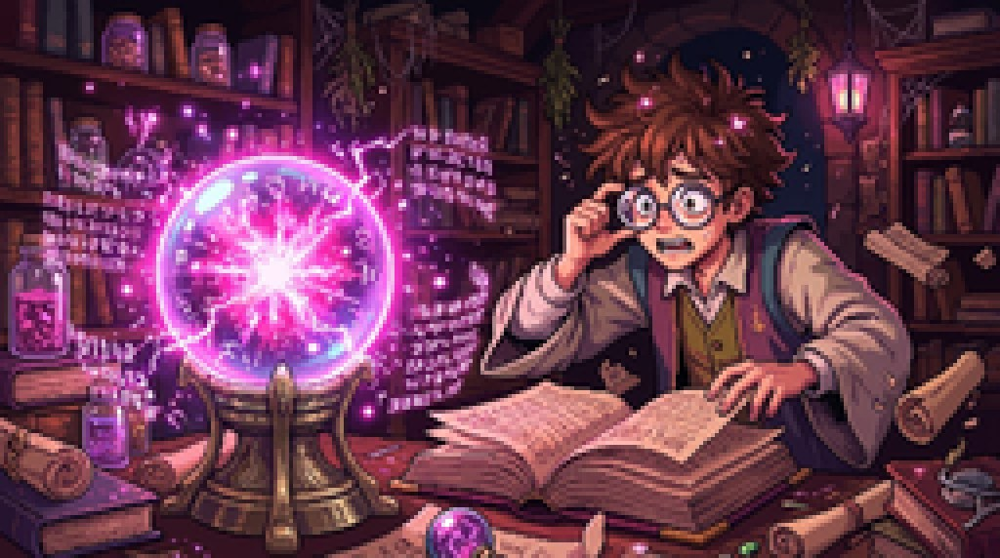
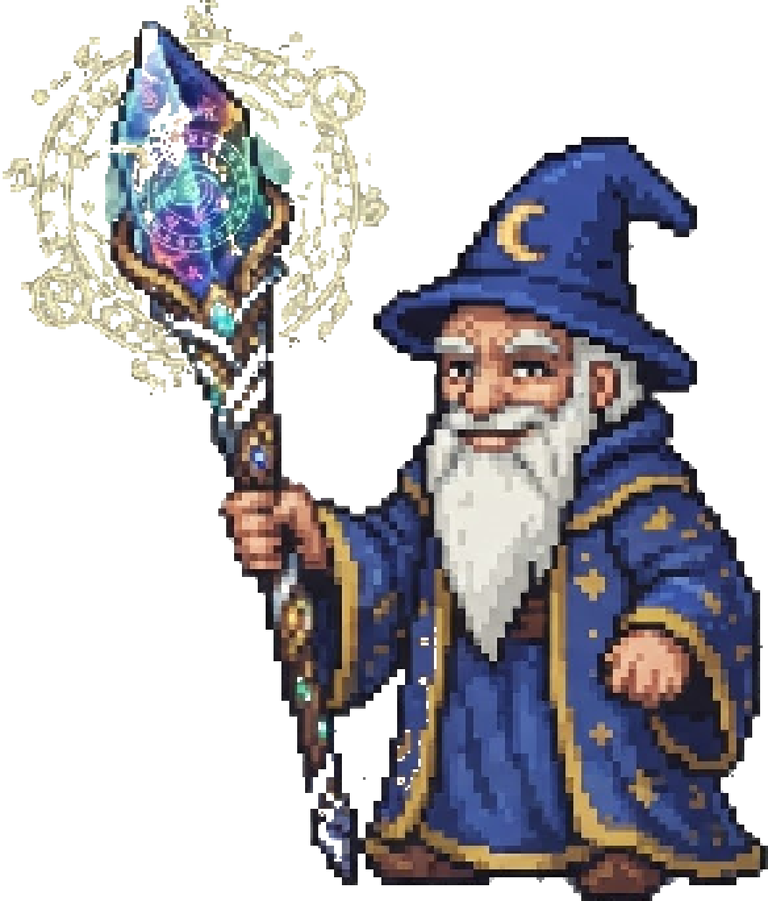
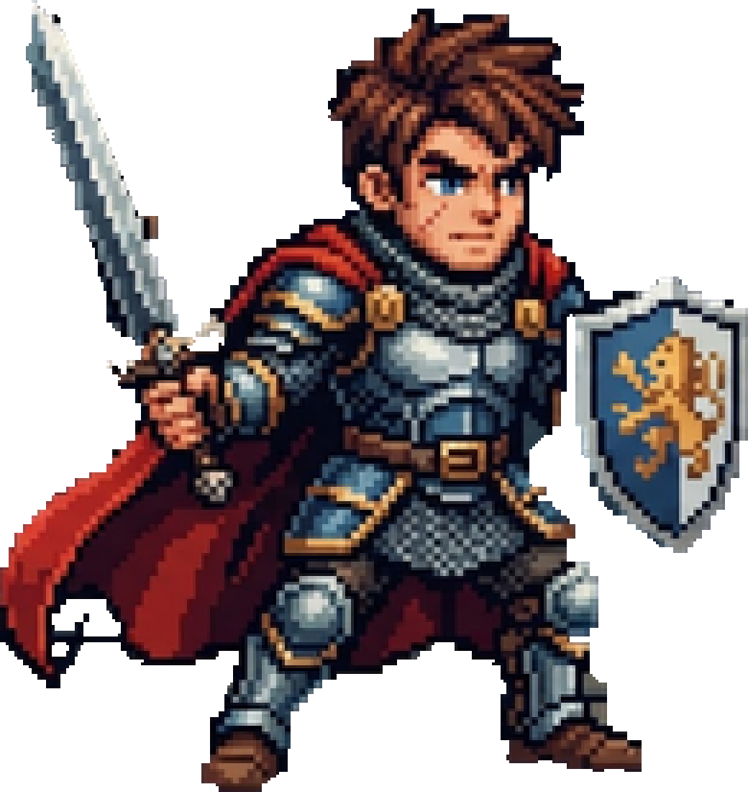

Health tracking is easy to start and hard to keep up. In HealthWiz Kingdom every healthy action has a visible effect.
It is a pixel-art fantasy RPG that is also a health tracker. You log water, meals, sleep, stairs (with workout heart rate), runs and stress. Medius, the Wizard King, guides you as your real actions restore the kingdom, with Luna, an apprentice witch, as your everyday companion.

How it works
What sets it apart
1Health first, game second. Health numbers and units stay in a plain, readable face. Game values (XP, levels, badges) are tagged “game progress, not a health measurement”.
2Every number shows its working. Inputs, formula, your own numbers step by step, linked sources and limits.
3Honest about uncertainty. Each value is labelled measured, calculated, estimated, simulated or missing. No invented readings, no made-up error margins.
4Private and optional. Works on your device with no account; an account is only for backup and sync.
- Scan or open the link. It runs in any modern browser; nothing to install.
- Create your traveller in the Traveller’s Registry.
- Log one thing today. Medius will take it from there.
- Tap Install app or Add to Home Screen to play offline.
healthwizkingom.github.io/Healthwiz-Kingdom
Your data stays yours
- Saved on your device. Download or restore a backup any time.
- Free account is optional: cloud backup and sync. Row Level Security means only you can read your row.
- Delete account and cloud data in two taps.
- Location is read only when you tap, and is never saved or sent. Camera pulse video is never stored.
- Medius AI chat is never stored, and there is no AI key inside the app.
Under the hood
A static web app: plain JavaScript, no build step, no server code of its own. Installable and offline-ready.
Credits and licences
Fonts: Press Start 2P and Pixelify Sans (SIL OFL 1.1). Map data © OpenStreetMap contributors (ODbL). MapLibre GL JS (BSD-3-Clause). Three.js (MIT). Map avatars: Tom, the anime school boy and girl (CC BY 4.0, suzuart). Campus look follows a drone video by @ikraMRahim, used with the creator’s permission. Knight 3D base: MakeHuman CC0 assets. Every other character and scene is an original HealthWiz design.


Turn your health into an adventure.
A pixel-art fantasy RPG that is also a health tracker, built on real science and honest numbers.